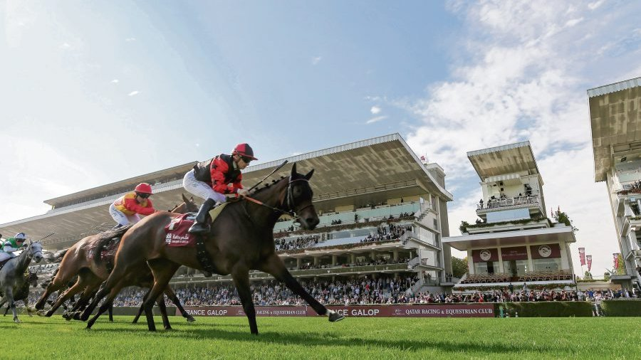

The hippodrome of ParisLongchamp

Built in 1857 this racecourse is the largest racetrack in France. Every year it hosts the biggest race in the world: The Prix de l'Arc de Triomphe race.
Built in 1857 this racecourse is the largest racetrack in France. Every year it hosts the biggest race in the world: The Prix de l'Arc de Triomphe race.
Building in 1834 this racetrack is the second most important racetrack in France. It hosts the Prix de Diane Longines every year. It is nicknamed the most beautiful racetrack in the world
Building in 1901, this racetrack is a little bit less know by the public, whatever it hosts each year the Grand prix de Saint-Cloud and the Critérium de Saint-Cloud
The Prix de L'arc de Triomphe is the most important race in the world. Being endowed with 5,000,000 euros, this race has existed since 1920 and takes place every year, on the first Sunday of October, on the Longchamp racecourse.
The Prix de Diane is also one of the most important races. It is doubly famous, for its winnings amounting to 1,000,000 euros, and for its famous elegance contest which elects a Miss Diane each year. This one wins a longine watch.
The Grand Prix de Saint-Cloud is a race reserved for horses over 4 years old. His allowance is 400,000 euros. This race is known for its picnic, this meeting is often called the "lunch on the grass" meeting.
Vadeni is a 3-year-old horse who won the Prix du Jockey Club and came second in the Prix de l'Arc de Triomphe. He also participates in other smaller races. He therefore obtains a total allocation of 2,044,100 euros in 2022
Alpinista GB is a 5-year-old mare with the most prize money this year. His total allocation is estimated at 3,085,650 euros this year in just 2 races. The Prix de l'Arc de Triomphe and the Grand Prix de Saint-Cloud
Nashwa GB is a 3-year-old mare who ran and won the Prix de Diane Longine, allowing Hoolie Doyle to become the first woman to win this event in 173 edition.She therefore obtains a total allocation of 685,700 euros this year.